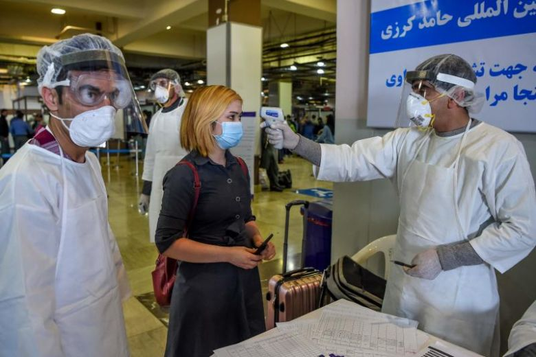

UN Delegation Pledges Cooperation to Fight COVID-19 in Afghanistan

Deputy United Nations Special Representative in Afghanistan, Toby Lanzer, traveled to Lashkar Gah with the help of the World Food Program, World Health Organization, International Organization for Migration and the United Nations Assistance Mission in Afghanistan.
They discussed with the local administration the fight against Coronavirus and international assistance.
Helmand Governor-General Mohammad Yasin said 'provincial agencies have made specific plans to prevent the Coronavirus, and staff is in the process of implementing it so that preventive measures can be taken to prevent the virus.The specialization of the 50-bed hospital, semi-quarantine of city and some districts, pharmacy and many other activities are underway in the city. '
The governor will seek assistance from the international aid agencies in addition to the Coronavirus diagnostic laboratory and medical equipment to assist poor families during the quarantine.Governor Yasin also thanked the UNICEF administration for opening its office in the province so that services in various fields would be better managed and the problems of Helmand people would be addressed in a timely manner.
'Coronavirus is a global phenomenon that preventive measures should be implemented to prevent it from spreading, even if the incidence of the Coronavirus in Helmand is increasing,' said Lanzer.Mr. Lanzer welcomed the Helmand provincial administration’s plan to fight the Coronavirus and emphasized that the most effective way to prevent the spread of this malicious virus is to take public action, quarantine and preventative measures.
Also at the meeting, WHO administration officials said they would also hire their agency’s representative through UNICEF’s office to work closely so that the needs of the province could be better identified and reworked.At the meeting, officials of IOM and WFP also pledged to continue their cooperation with Helmand province in humanitarian assistance.
Government Departments Take Quick Efforts to Fight Coronavirus
In Kandahar, the governing body was heavily involved in the fight against the Coronavirus, where a number of decisions were made.Governor Hayatullah Hayat said that the spread of the virus was increasing day by day.He said, 'the risk of the virus is increasing day by day, and all agencies, along with the health department and the provincial authority, must fulfill their national responsibility for providing public awareness and preventive services.'
Later, Dr. Ashraf, the local head of the public health department, also spoke on the measures taken by the department.He said, 'three health teams have been appointed for the health assessment of commuters in Spin Boldak district and for three hours program in Zhari district and public awareness programs are currently underway with the help of donor agencies in the city and districts.'
He added that a five-member committee was appointed for the evaluation of the eight-bed hospital.The patients’ nutrition was taken by UNICEF administration, and with the help of donor agencies, the treatment was continued in industrial parks, cities, and districts.
The Director of Public Health informed that public awareness and the technical plan was being put in place to prevent Coronavirus, adding that unnecessary operations and normal patients were stopped at Mirwais Hospital and increased attention was given to the prevention and treatment of the Coronavirus.
At the same time, the administrative board decided that all passengers from today, who are coming to Kandahar from Herat, Farah, and Nimroz, will be screened first by the public health department personnel in Zhari district for the diagnosis of coronavirus.
[bsa_pro_ad_space id=4]
Share on Facebook Tweet Follow us
Posted On: 2020-04-10T00:00:00
Posted By: Benedict Kasigara


Content Date: 2020-04-10
Download Date: 2021-07-09
Document ID: L0C04EWPR